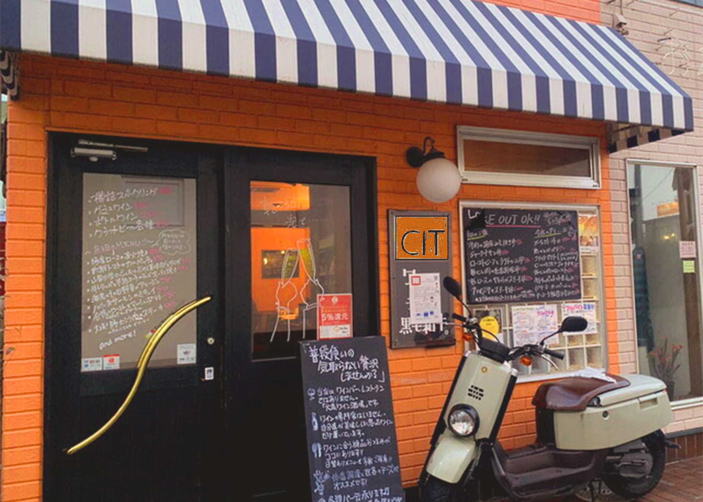

Access ― アクセス

住所：〒999-999 奈良氏之市都田沼123
最寄駅：都田沼駅
学校帰りやお仕事帰りにも立ち寄りやすいロケーションです。
電車でお越しの場合
都田沼駅より徒歩2分。北口を出て、ロータリーを右手に直進。
1つ目の信号を左折して、2本目の路地を右に入ると左手に当店が見えてきます。
周辺地図
Mapエリア（Googleマップ等を埋め込み予定）
実際の公開時には、Googleマップなどの埋め込みを想定しています。
営業時間・定休日
- 営業時間：17:00〜23:30（L.O. 23:00）
- 定休日：不定休（貸切のご相談はお気軽にどうぞ）
- 電話番号：000-1234-5678